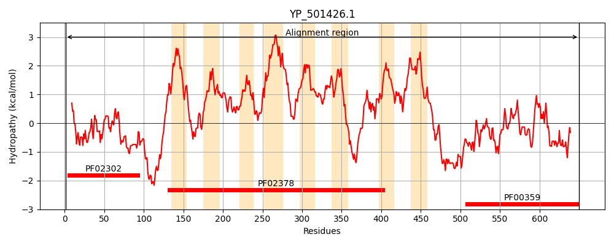

Hit Accession: O31645
Hit TCID: 4.A.2.1.6
Hit Description: gnl|BL_ORD_ID|7064 gnl|TC-DB|O31645|4.A.2.1.6 Phosphotransferase system (PTS) mannose-specific enzyme IIBCA component - Bacillus subtilis.
Mach Len: 654
e:0.000000
Query TMS Count : 8
Hit TMS Count: 10
TMS-Overlap Score: 7.050000
Predicted Substrates:CHEBI:14575;mannose
BLAST Alignment:
Score: 1932 , Bit scores: 748 bits, E-value: 0.0e+00, Alignment length: 654, Percentage identity: 60
Query: 1 MKIVAITSCPNGIAHTYMAQEKLEQVAKEMGVDIKVETQGGVGAENVLTTQDIEEADGVIIAADKQVDLSRFVGKRLINENVREGIHNPRGLIQRIINQDAPIYQSETNYHSKDRGKSKNGIQMVYQHLMNGVSFMVPFIVVGGLLIAIALTLGGETTSKGLVIPDDSFWKSIENIGSLAFKFMVPILAGYIAVSIADKPGLVPGMIGGAIAADGSFYGSDAGAGFLGGIVAGFLAGYIAKWIKDIKVPKAMAPIMPIIIIPIISSVVVGLIFIFLIGAPISNIFEALTTWLKSMQGANIIILAMIIGAMIAFDMGGPVNKVAFLFGSALIAEGNYAVMGMVAVAVCTPPIGLGLATFVQKYKFNHSEREMGKASFTMGLFGITEGAIPFAAQDPLRIIPANIIGAMIASVIAAIGGVGDRVAHGGPIVAVLGGIDHVLWFIFAVIVGSLVTMTTVLLLKRN---TPVIAVDAPAQHTQLHDTDITQHDTEVDNVDNTAKHSHLNKPSHVFDQQTMIITDHDMSRNEAIDMLIHKLKICRYVEHTSHLKNAILEREMESTTAIGMNVAIPHAKSDVVKQPIVAVMKNNHGVKWDSLDGSLPQLIFLIAVPNNS-QDTHLKILQRLSKALMNDETRQSLINANSTTEIYNLLMKI 650
MK++AITSCPNGIAHTYMA E L++ A +GV IKVETQGG+G EN LT ++I EAD +IIAAD+ V+ RF+GK+L++ V++GI P LIQ+ +N D P+Y+S T S + + K +Y+HLMNGVSFMVPFIVVGGLLIA+ALTLGGE T KGLVIPDDSFWK+IE IGS +F FM+PILAGYIA SIADKPGLVPGMIGG IAA GSFY S +GAGFLGGI+AGFLAGY A WIK +KVPKA+ PIMPIIIIP+ +S++VGL F+FLIGAP++ IF +LT WL M+G++ I+LA+I+GAMI+FDMGGPVNKVAFLFGSA+I EGNY +MG +AVA+C PPIGLG+ATF+ K KF S+REMGKA+FTMGLFGITEGAIPFAAQDPLR+IP+ + G+M SVIA IG VGDRVAHGGPIVAVLG +DHVL F AVI GSLVT V +LK++ +PV++ AP T ++ + A+ S K + + + + + ++ ID LI KL + S K AIL RE + TTAIGMN+AIPH KS+ V++P VA GV W+SLDGS +LIF+IAVP S + HLKILQ LS+ LM+D R+ L++ +T E Y LL +I
Sbjct: 1 MKLLAITSCPNGIAHTYMAAENLQKAADRLGVSIKVETQGGIGVENKLTEEEIREADAIIIAADRSVNKDRFIGKKLLSVGVQDGIRKPEELIQKALNGDIPVYRSATKSESGNHQEKKQN--PIYRHLMNGVSFMVPFIVVGGLLIAVALTLGGEKTPKGLVIPDDSFWKTIEQIGSASFSFMIPILAGYIAYSIADKPGLVPGMIGGYIAATGSFYDSASGAGFLGGIIAGFLAGYAALWIKKLKVPKAIQPIMPIIIIPVFASLIVGLAFVFLIGAPVAQIFASLTVWLAGMKGSSSILLALILGAMISFDMGGPVNKVAFLFGSAMIGEGNYEIMGPIAVAICIPPIGLGIATFLGKRKFEASQREMGKAAFTMGLFGITEGAIPFAAQDPLRVIPSIMAGSMTGSVIAMIGNVGDRVAHGGPIVAVLGAVDHVLMFFIAVIAGSLVTALFVNVLKKDITASPVLSETAP---TSAPSEAAAANEIKQPIQSQKAEMSEFKKLTDIISPELIEPNLSGETSDDIIDELIQKLSRRGALLSESGFKQAILNREQQGTTAIGMNIAIPHGKSEAVREPSVAFGIKRSGVDWNSLDGSEAKLIFMIAVPKESGGNQHLKILQMLSRKLMDDNYRERLLSVQTTEEAYKLLEEI 649 | Protein Hydropathy Plots: |
|---|
|  | |
Pairwise Alignment-Hydropathy Plot:
|
|---|
|